The console is part of the server
Every strata-server answers GET / with the command center: 26 views to watch a cluster, take a slow query apart, build queries and tables, tune what people see, and change the cluster by drawing it. It is the same on a laptop's file and on a cluster in the cloud, and there is nothing else to install.
/Compiled into the server binary, with no second service, plugin or licence tier, and no CDN, so it works offline.
A single server shows its storage and where writes go; a coordinator shows every shard and copy, from kind on a laptop to EKS.
Drag the cluster's shape, an alert's threshold on its chart, a rollout gate's limit, blocks into a query, tables in the schema.
It reads the same API as any client, and changes only what the key it signs in with is allowed to.
See the cluster, not a list of nodes
- Topology draws the coordinator and every copy, with calls a second on the links and each replica's lag. Drag, pan and zoom; click a copy to promote it or checkpoint it.
- Fleet colours every shard by one measure. Fail machines in a what-if and see which shards keep serving, fail over or go dark, with nothing stopped.
- Query path runs one query 10 to 100 times, draws each shard's call on a radar, and estimates the p99 a sooner hedge would give.
- Overview, Performance and Alerts chart the cluster over any range, zoomed together; drag an alert's threshold and see how often it would have fired.
- Queries and Logs: cancel a running query, open one as a waterfall across shards, and search every server's logs with SQL.
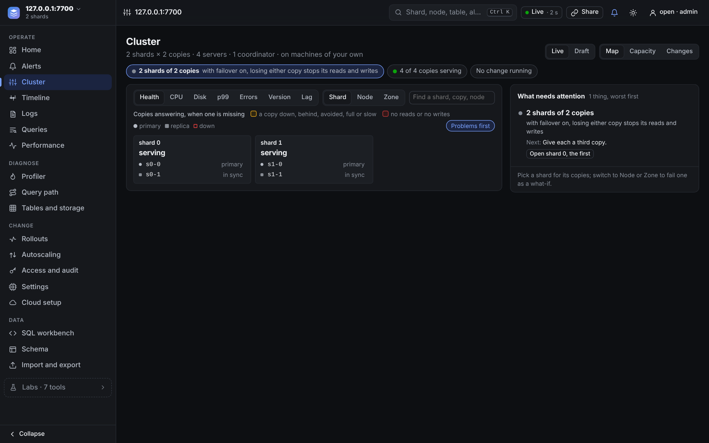

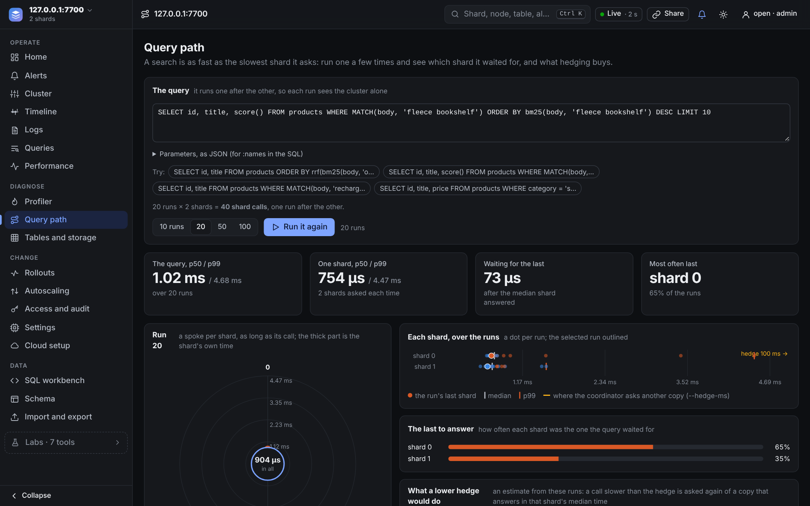
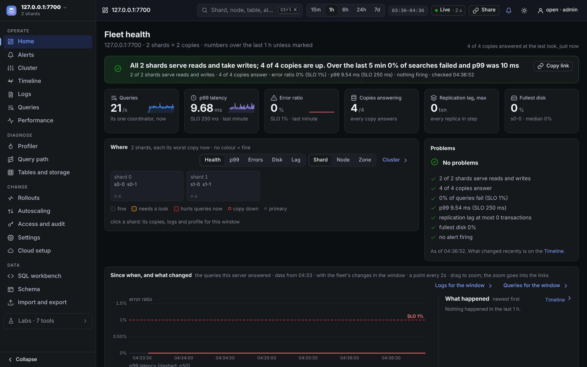
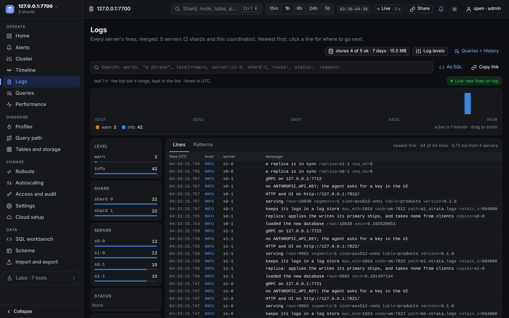
Flame graphs for any query, on any node
- Profiler: a flame chart of every step beside the request's trace, segments searched side by side on their threads, the operator tree with self and CPU time, and on a coordinator each shard's call split into the network and the shard's own time.
- CPU samples every thread of the server for 1 to 30 seconds, while its clients run or while a query runs in a loop, and draws what they ran by thread pool.
- Memory shows the heap over time and where a query's bytes were allocated.
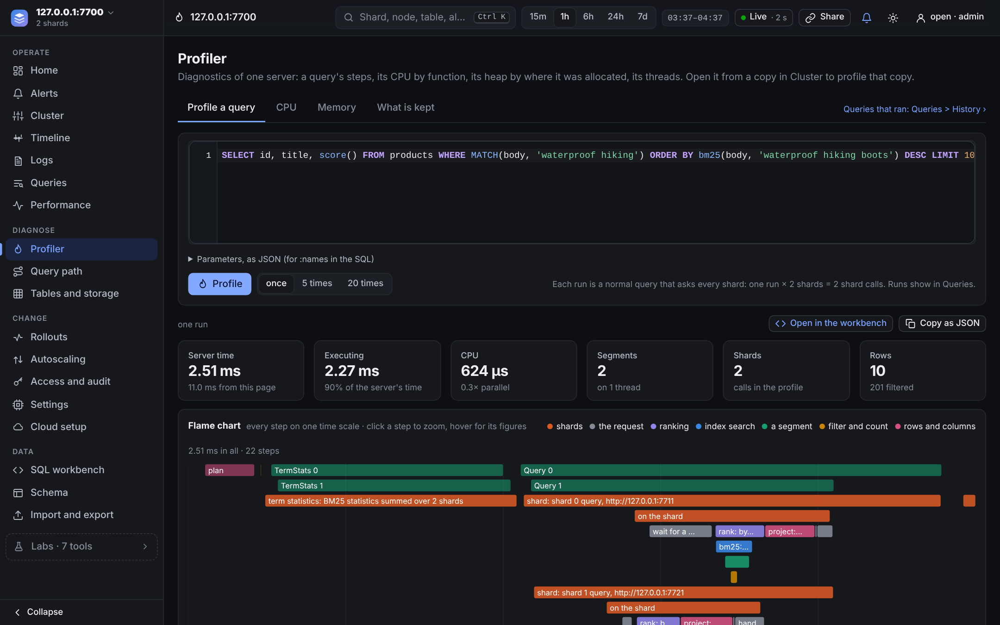
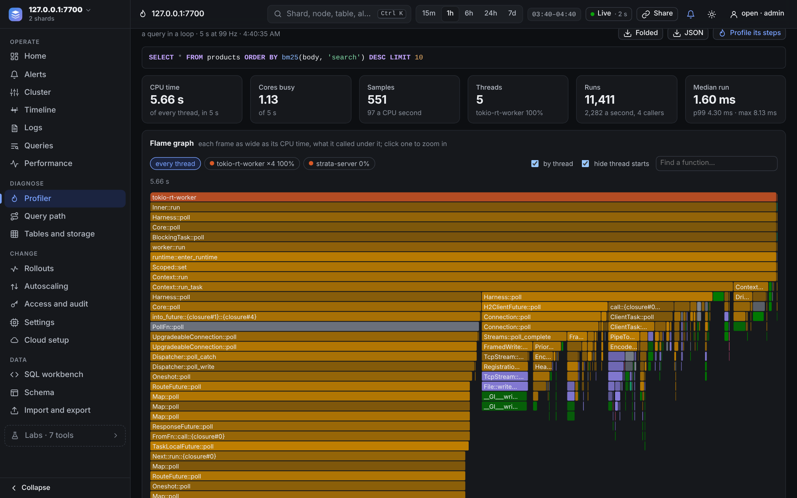
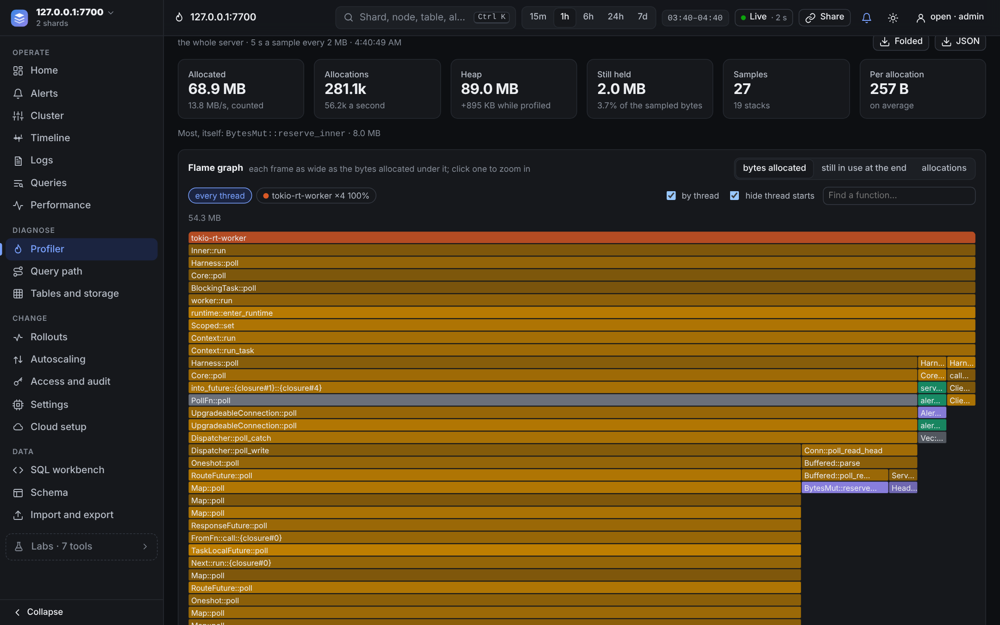
Write queries and tables with the database helping
- Query builder: drag words, filters, boosts and groups into stages. The SQL is written and run as you build, and each link counts the rows its stage kept.
- SQL workbench completes tables, fields and a JSON field's keys with their share of rows, shows the plan of each segment, draws scores as bars and charts the answer.
- Schema draws tables as cards linked by references and edges. Design a new table by dragging types into it, checked by the server as you go.
- Import and export previews a CSV, JSON Lines or SQLite file with the type of each column before anything is written.
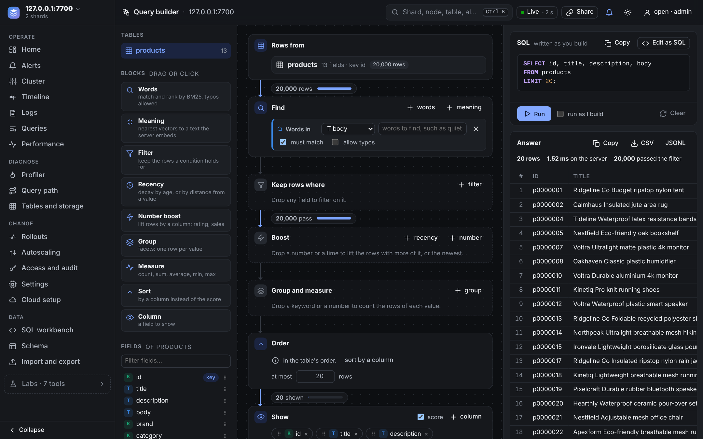
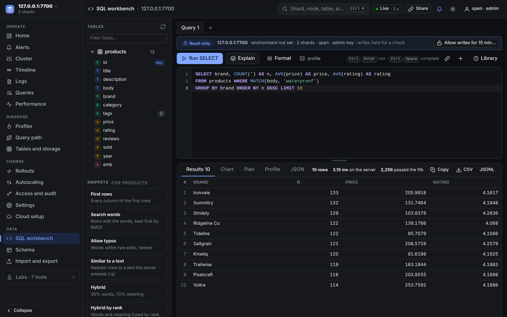
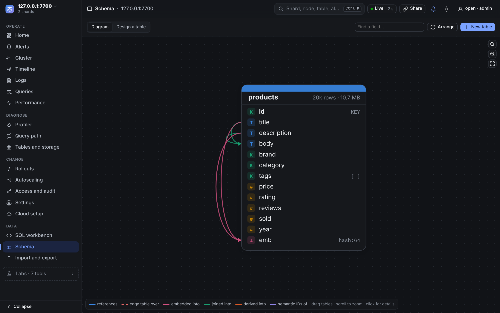
Tune what people see, with the evidence beside it
- Relevance lab runs two rankings side by side, with lines showing where each row moved. Grade the rows, or have Claude grade them, compare nDCG, tune a hybrid's weight, and keep the winner with its table as a rank profile.
- Recsys eval measures logged rankings against what users did next: nDCG, hit rate, the lift of one variant over another and whether it is significant, and which side of an interleaving users preferred.
- Semantic IDs, Autocomplete, Media search and Graph explorer: a codebook as a sunburst, completions timed keystroke by keystroke, images found by a sentence, and graph walks with their SQL.
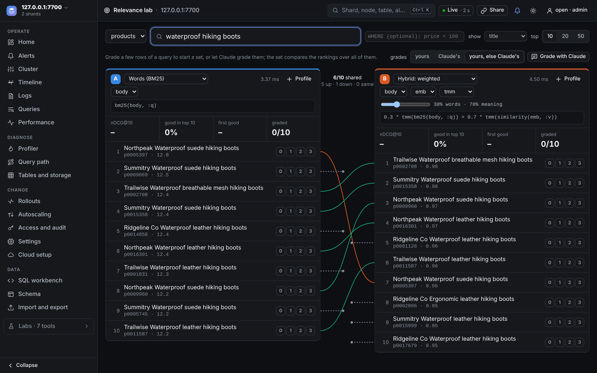


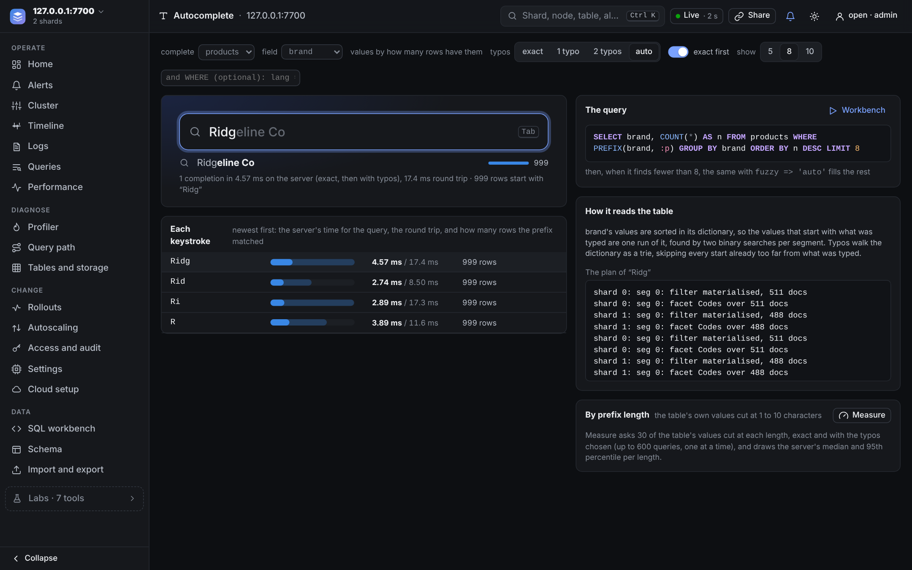
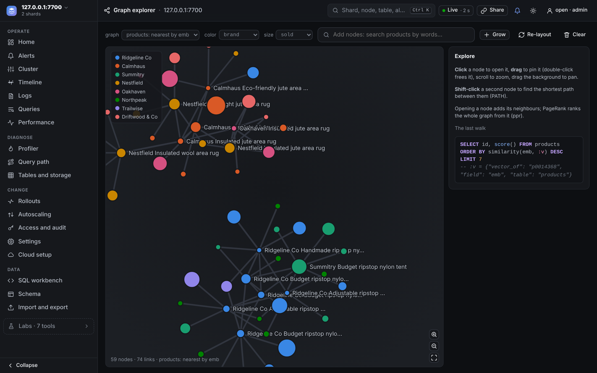
Change the cluster by drawing it
- Control center: drag the shape's handles for more shards and copies, or say it in a sentence ("add 2 shards", "survive losing a server"). The guardrails it crosses, its effect on the last minute of load and the operator's plan come before Apply.
- Rollout measures each step on the cluster, draws its health gates as live charts with limits to drag, and keeps every version with its diff and a rollback.
- Autoscaling writes the rules as sentences and replays the last week of load on them before they are saved.
- Cloud charts a cloud's machines by memory and price, costs the plan line by line, and then makes, follows and deletes the cluster on EKS or DigitalOcean.

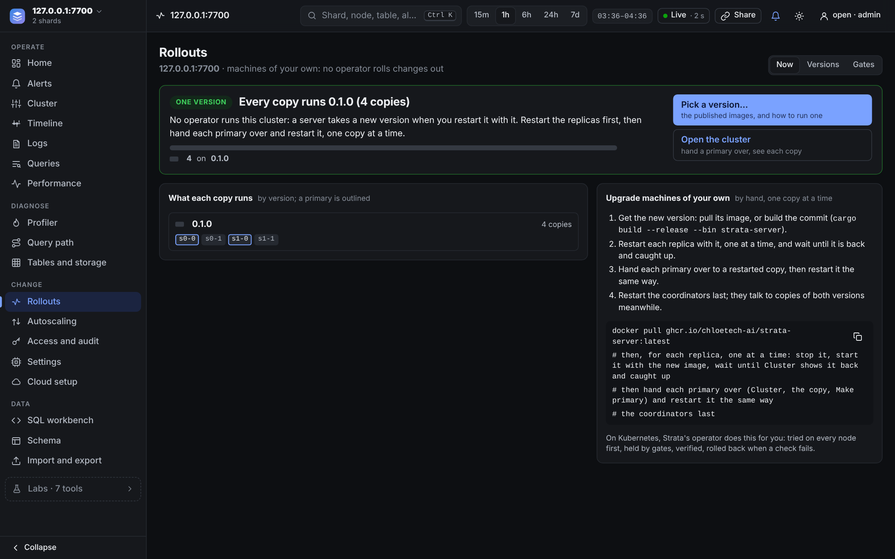
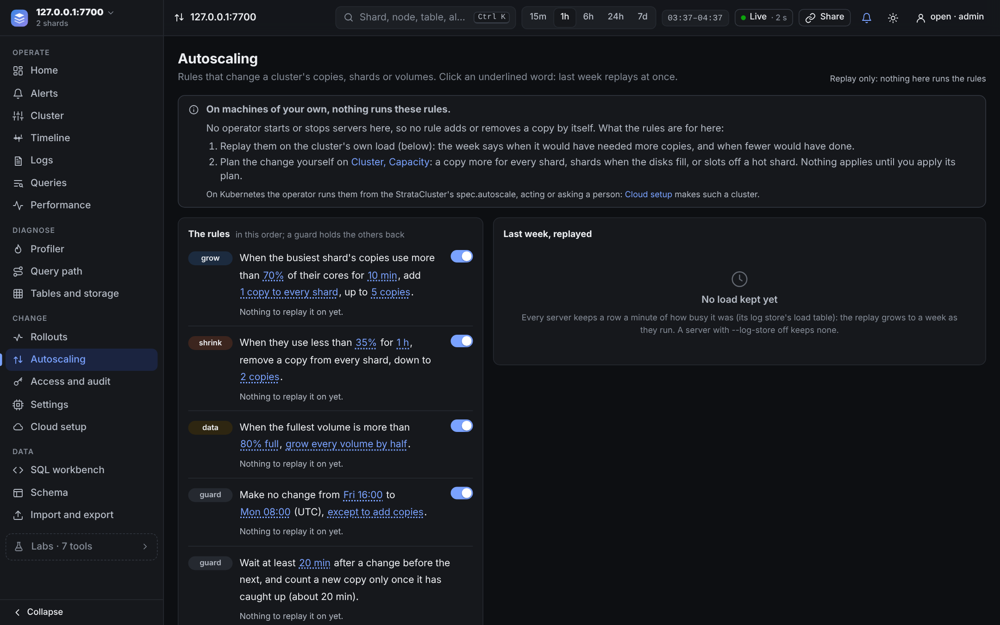


What the others ship for this
Elasticsearch and OpenSearch leave the console to a second product, Kibana or OpenSearch Dashboards, run and secured beside the cluster. Solr and Qdrant serve a smaller console of their own, and Milvus has Attu as a separate service. The rows below are the jobs above.
The whole comparison, every system and every capability, is on Compare.
Open it on your laptop in a minute
The demo fills a database with sample products and serves it. Behind a coordinator, on kind or in the cloud, the same pages show every shard and replica.
Every view is described in the server documentation.
strata-server --demo 20000 --db products.strata # sample products at localhost:7700 open http://localhost:7700/ # the command center # a cluster the operator runs, on kind or in the cloud kubectl -n strata port-forward svc/demo 7700:7700